编号：0027
日期：2019.12.30 分类：特效记录
1、将全景网格图拖入PS中，然后另存一个地方，PSD格式
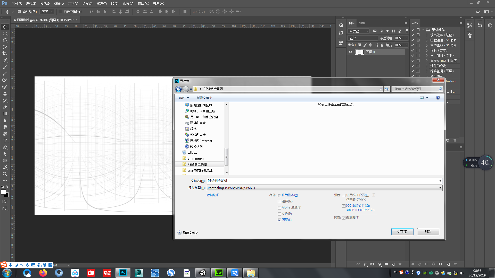2、选中图层，3D——从图层新建网格——网格预设——球面全景
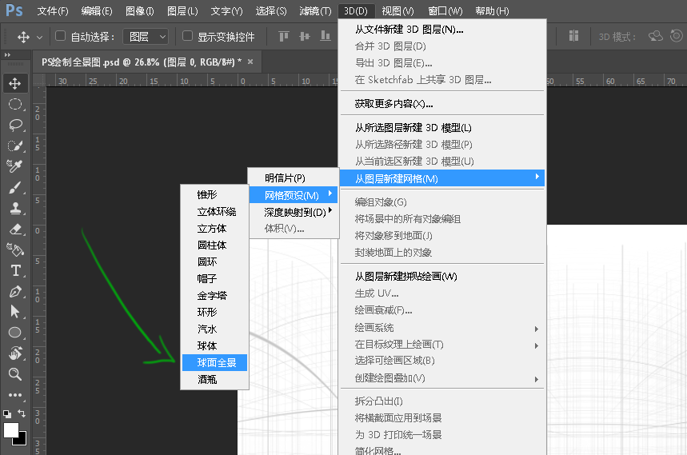3、你可以选择转到3D工作区模式，能节省一些你找相关菜单的时间。
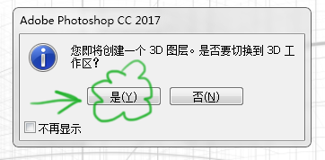4、你可能已经迫不及待地旋转起来了，但发现一转就转到了球外面。。。而且巨难复原或者Ctrl+Z。。。
你应该要先选中【球面全景图】这一栏，然后再用鼠标旋转
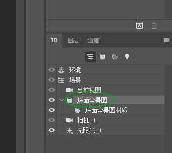5、如果你已经转乱，又不想CtrlZ，那就点一下【相机_1】，恩，也自动恢复了。
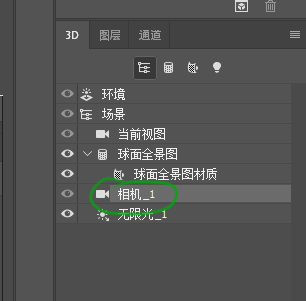6、回来后，他会自动跳到【当前视图】，所以请再次选择【球面全景图】进行操作。
7、接下来，你想画点什么试试，于是选中了图层，然后新建图层，在图层上灵魂勾勒两笔，然后又转动了球，发现你的灵魂笔迹并没粘着你的球。
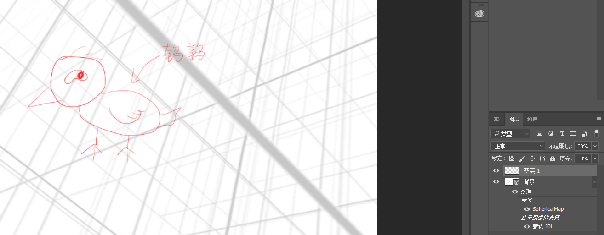8、你可以选择你的灵魂图层，然后Ctrl+E，合并图层。（接着由于你的灵魂遭遇了降维打击，所以变成了马赛克。）
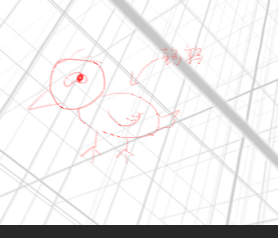9、作为一个超级灵魂画手，你是不会向马赛克妥协的，于是就请。。。
打开【图层】隔壁的【3D】，点中【球面全景图材质】，看到顶上【属性】，【漫射】，点一下隔壁的图标，【编辑纹理】
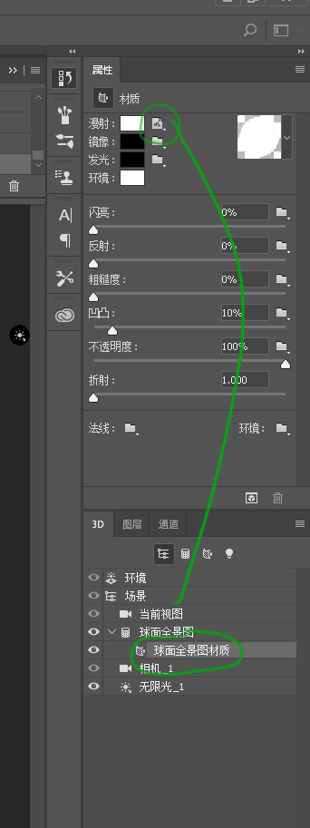 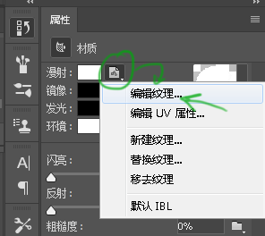10、然后你就有了看似全新，实际上已经有了自己【灵魂】的新画布。
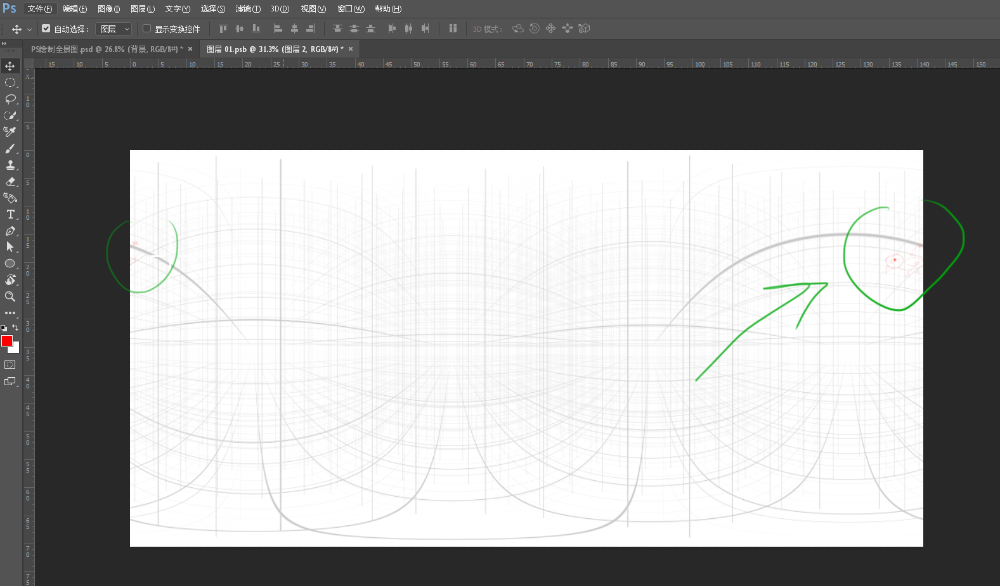11、Emmmmm你寻思了下，选择原谅，然后新建了图层，画上了第二个灵魂，然后保存了一下。
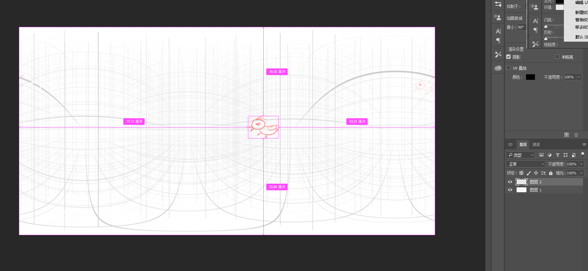12、接着忐忑地点开了第一个球画布。你可能会发现第二个灵魂并不在场？？其实只是你的视角没看见他。你可以重置一下视角。
（重置之后会把视角放在中间，我猜八成的人都会把第二个灵魂往中间画，所以归一下会比较好找。）
这次重置你发现【相机_1】不管用了，对，我也是刚刚发现的。
然后就摸索了下，你可以酱紫【球面全景图】——【属性】——【坐标】——【复位坐标】【移到地面】二连。
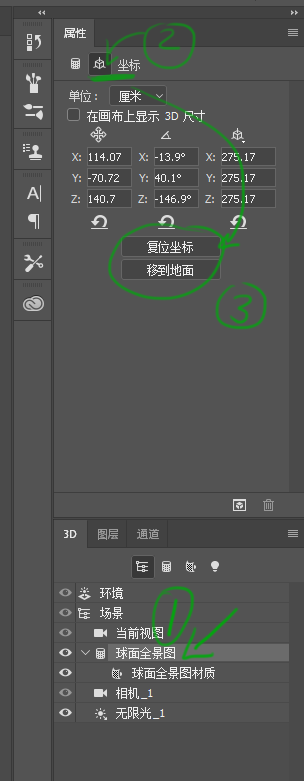13、然后你再转一转就找到你的第二灵魂了。
另外你要注意你使用的工具，这顶上的
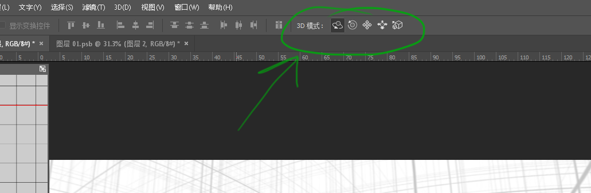你鼠标停一下，就会有下标，然后我用自己的话讲从左到右依次是：转球、旋转、平移、远近、缩放
通常我们用第一个。
14、另外，据说一般大佬喜欢吧【当前视图】【视角】改为15，会比较舒服一些。
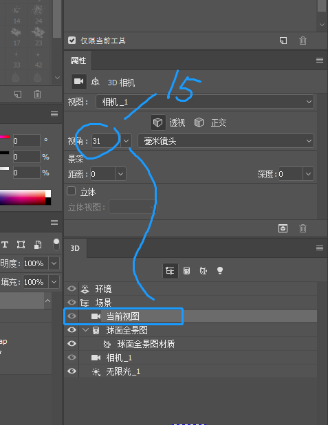15、另另外，你在打开【编辑纹理】的时候，可能是这样的
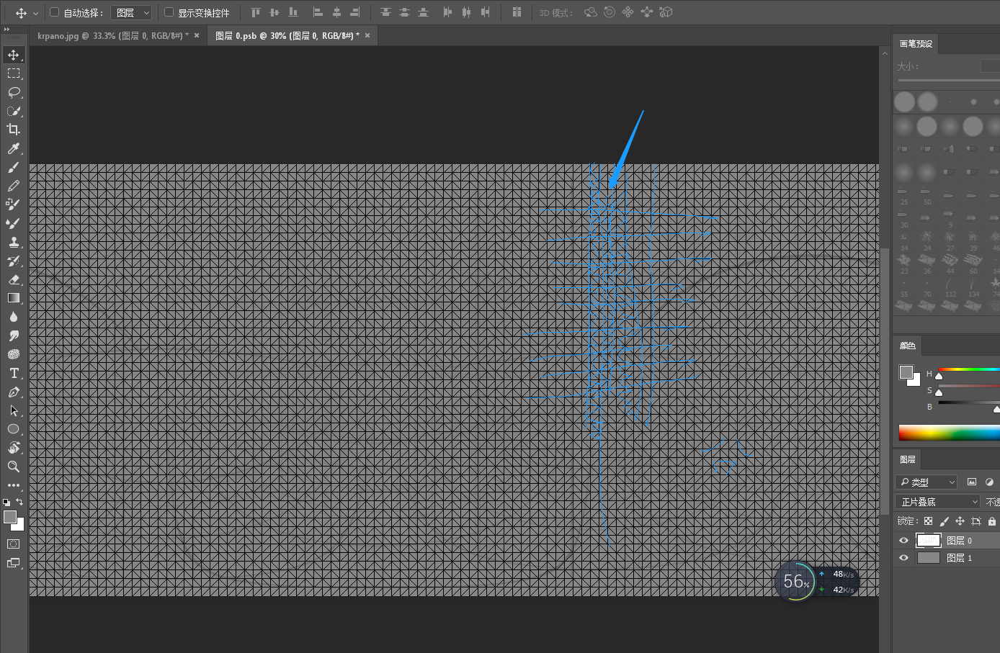16、找到【属性】【UV叠加】，把勾去掉就好了。
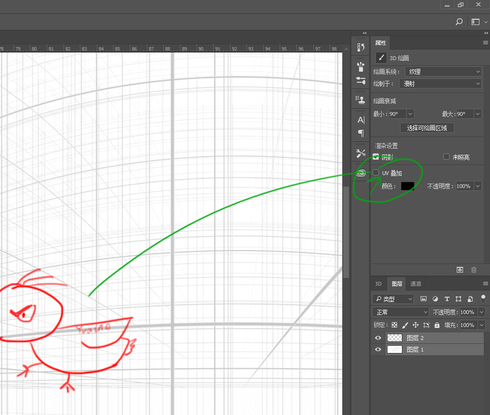这个教程。。。我搁置了很久很久，三四个月。
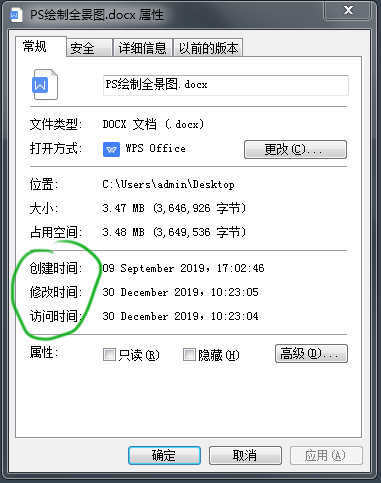主要是，我嫌麻烦。。。。其次我也不太懂怎么用ps画全景，净瞎扯和摸索的
还有上次编辑的时候，我觉得说的废话太多，就怒删了
各种原因，包括今天公司没网络，我顺手清理文件，这篇入坑教程才出来
我想这个技能对特效作用不大，上次我就是解释“为啥作用不大，我还要学”说了太多废话
这次。。。。不说了，我这也不算会